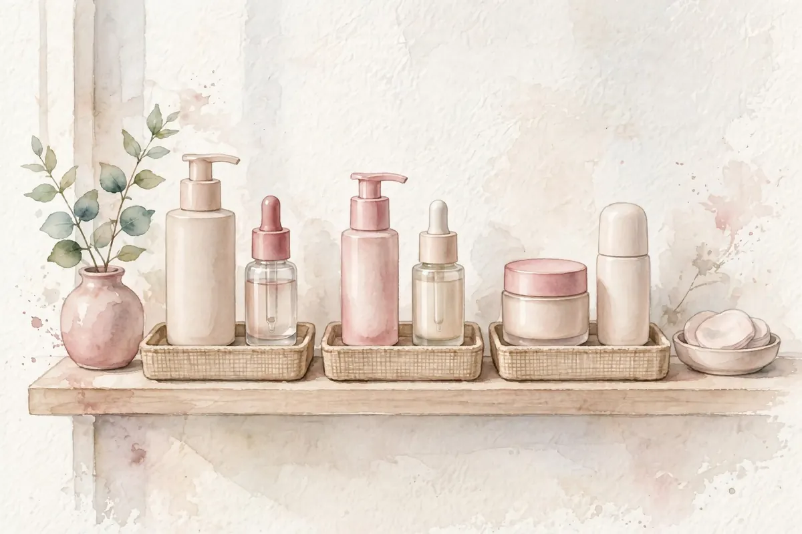

トップ ＞ スキンケア ＞ 洗面所の棚の並べ方：手順が見える収納
洗面所の棚の並べ方：手順が見える収納

洗面所の棚は、毎日のケアの「現場」です。並べ方ひとつで、手順の迷いや塗り忘れは大きく減ります。施術の現場でも、道具の配置は作業の流れそのものです。この記事では、手順が見える棚の並べ方を整理します。
使う順番に、一列に並べる
基本は、使う順番に左から右へ一列に並べることです。落とす、洗う、化粧水、美容液、仕上げ、という流れが、そのまま棚の並びになります。並びが手順書の代わりになるので、疲れた夜でも迷いません。棚の奥に置くと手が届きにくいので、毎日使うものは手前の一列に集めます。
高さのある棚では、目線の高さに毎日使うものを置くのが基本です。たまに使うものは上の段へ。使用頻度で段を分ける考え方は、キッチンの収納と同じです。
朝用と夜用を、場所で分ける
朝と夜でアイテムが違う場合は、左半分が朝用、右半分が夜用、というように場所で分けると取り違えが減ります。容器の見た目が似ているもの同士は、キャップに小さなシールを貼るなど、触った瞬間に分かる印を付けるのも有効です。
共有の洗面所では、家族それぞれの場所を決めておくと、混ざりません。トレーやかごで一人分をまとめると、掃除のときにも動かしやすく、棚全体の見通しがよくなります。
倒れる・落ちるへの小さな対策
細長い容器やスプレーは、倒れやすい形です。ブックエンドのような仕切りや、底の広いトレーを使うと安定します。棚の縁に近い場所には、落下の心配があるものを置かないのも基本です。ガラス容器はとくに、置き場所に注意してください。
並べ方の見直しは、新しい収納用品を買うことから始めなくても構いません。まず今あるものを手順順に並べ替える。それだけで、毎日の動きが変わります。棚は、ケアの流れを映す鏡です。
掃除のしやすさまで含めて、並べ方
棚の並べ方は、掃除のしやすさとも関係します。容器を直に並べるより、トレーにまとめると、棚の拭き掃除のときに一度で動かせます。水はねの多い洗面所では、棚の表面に水滴や石けんの跡が残りやすいものです。掃除がしやすい配置は、清潔な保管環境を保つことにつながります。
また、棚の見直しは、在庫の確認の機会でもあります。並べ替えのときに、開封日の古いもの、長く使っていないものが見えてきます。並べ方を整えることは、手順を整えることであり、在庫を整えることでもあります。一度の作業で、3つの見直しができるのです。
並べ方の工夫は、家族の人数が増えるほど効いてきます。共有の棚では、「誰のものか」と「どの順番か」の2つの情報が並びに必要です。色の違うトレーで所有者を分け、その中では手順順に並べる。この二段構えにすると、家族全員が迷わず使えます。
来客時に洗面所を使ってもらう場面では、棚の状態がそのまま家の印象にもなります。整った棚は、見た目のためだけではなく、毎日の使いやすさの結果です。使いやすさの追求が、結果として見た目も整える。それが収納の面白いところです。
棚の並べ方を決めたら、その並びを写真に撮っておく方法もあります。模様替えや引っ越しのときに、元の並びを再現する資料になります。家族が片付けを手伝う場面でも、写真があれば並びが崩れません。小さな工夫ですが、習慣の維持には効いてきます。
新しいアイテムを迎えるときは、棚のどこに入るかを先に決めるのがおすすめです。入る場所がなければ、棚全体の見直しの合図です。収納の容量が、手順の容量を決める。この関係を意識すると、アイテムの増えすぎにも気づけます。
棚は、毎朝毎晩、目に入る場所です。その場所が整っていることは、ケアの気持ちの準備にもなります。並べ方は、環境づくりそのものなのです。
セラフィナ「並び順が手順書になる収納、いいね。疲れた夜ほど助かる工夫だよ」

セラフィナ｜美容の道具箱の案内役
「量と表示が分かれば、美容は失敗しない。」——セラフィナと白猫のモコが、買う前のチェックポイントを案内します。綺麗になりたい気持ちに正直に、でも表示は冷静に読むのが、このサイトの約束です。